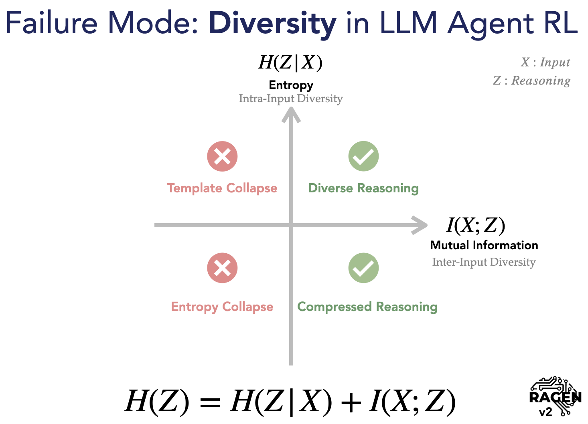
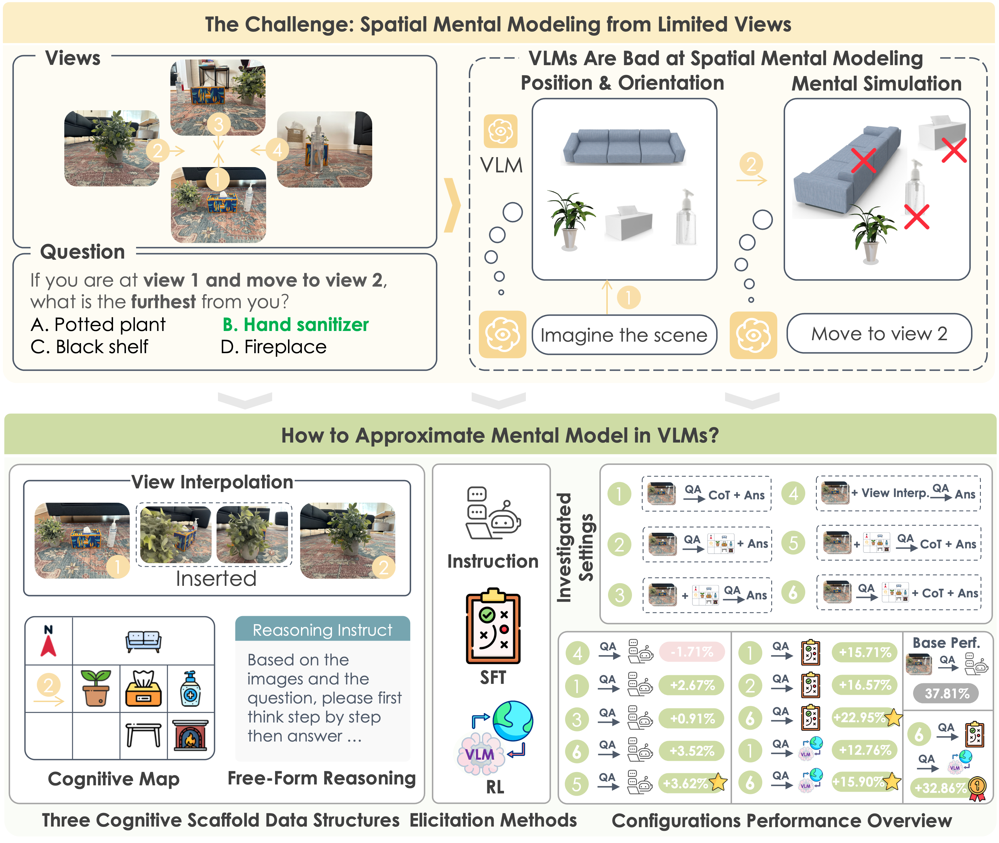
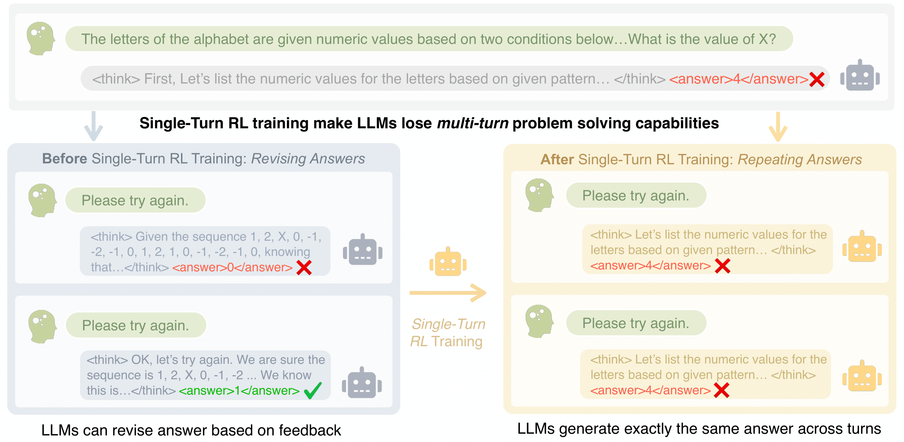
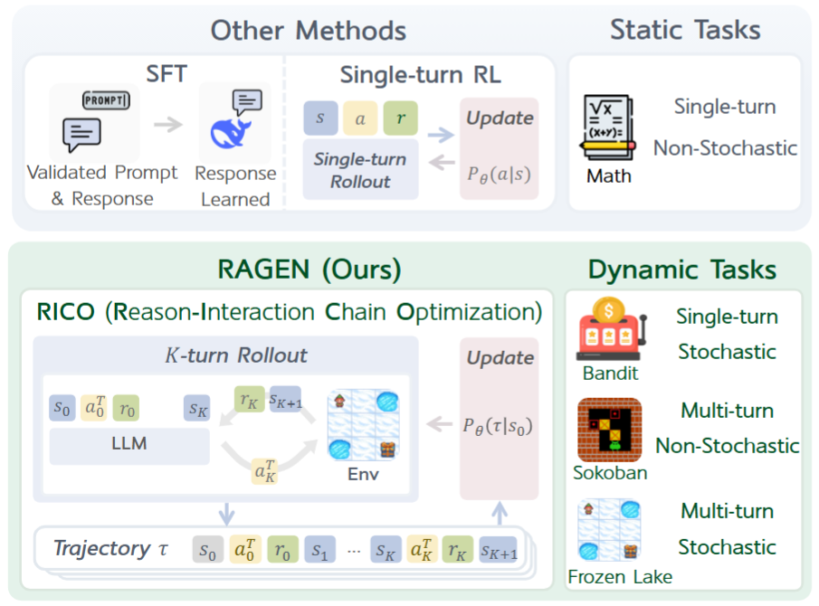
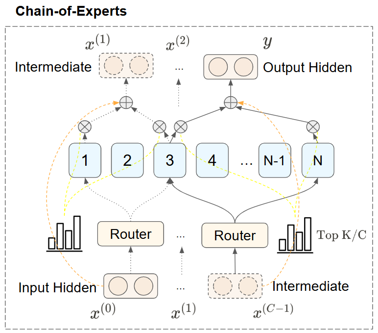
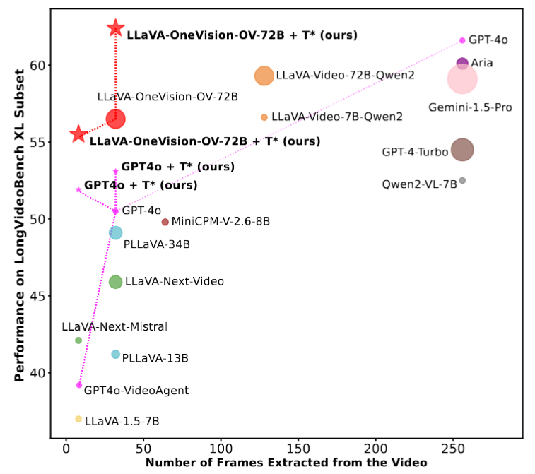
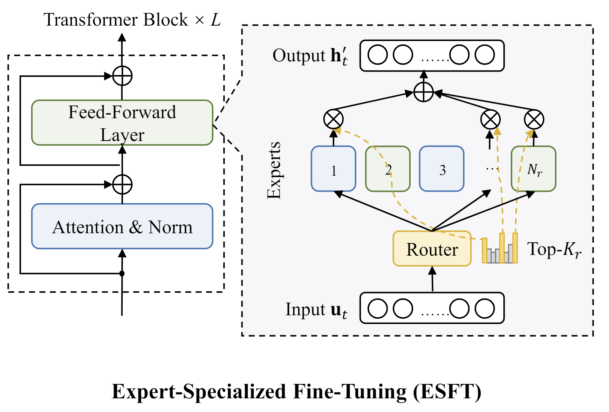
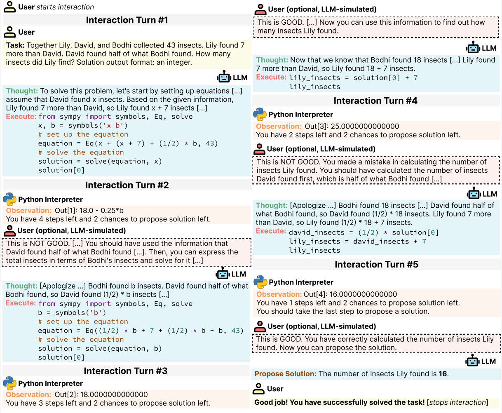

Zihan "Zenus" Wang王子涵
Researcher · Northwestern University
I am a PhD researcher at Northwestern University working on Agentic RL with Manling Li. I will spend this summer at NVIDIA, and I previously interned at Microsoft, Yutori, and DeepSeek.
Updates
Feb 2026
RAGEN-2: Reasoning Collapse in Agentic RL
New preprint · SNR-Aware Filtering fixes template collapse in multi-turn RL
Mar 2026
Joined the David Ondrej Podcast
On multi-turn agent RL collapse, DeepSeek's research culture, and agent bottlenecks
Dec 2025
Outstanding Paper @ NeurIPS 2025 LAW
MindCube recognized at NeurIPS LAW · Best Paper @ ICCV 2025 SP4V
News
- Mar 4, 2026 — Joined the David Ondrej Podcast! We talked about why multi-turn agent RL collapses—and what we can do about it. Also discussed DeepSeek's infra and research culture, AI labs comparison, and agent bottlenecks. [Watch]
- May 22, 2025 — Joined the Manifold Podcast with Steve Hsu! Dived into robotics, small models, RL, and lessons from DeepSeek. Also shared my work on RAGEN and Chain-of-Experts. [Listen]
- Apr 25, 2025 — Gave a talk about RAGEN at UIUC NLP Reading Group! [Slides]
- Jan 27, 2025 — Introducing RAGEN — the world's first reproduction of DeepSeek-R1(-Zero) methods for training agentic AI models!
- Sep 20, 2024 — ESFT has been accepted to the EMNLP 2024 Main Conference!
- Jul 4, 2024 — Introducing Expert-Specialized Fine-Tuning (ESFT) for efficient and effective LLM customization leveraging Mixture-of-Experts architecture.
- Jun 2, 2024 — Grateful to be spotlighted by my alma mater RUC for my journey and achievements. [Read blog]
- Feb 15, 2024 — Excited to join Northwestern as a researcher! Many thanks to my advisor Manling Li!
Selected Publications
Full list on Google Scholar / Semantic Scholar

NewRAGEN-2: Reasoning Collapse in Agentic RL
Preprint Huggingface #2 Paper of the Day
We discover template collapse in multi-turn agent RL — where models learn input-agnostic reasoning patterns that fool entropy metrics. We propose SNR-Aware Filtering to fix it.
NewVAGEN: Reinforcing World Model Reasoning for Multi-Turn VLM Agents
NeurIPS 2025 Featured by Stanford AI Blog
VAGEN trains vision-language agents with explicit world-model reasoning and bi-level reinforcement learning, stabilizing credit assignment in sparse multi-turn environments.

NewSpatial Mental Modeling from Limited Views (MindCube)
Outstanding Paper @ NeurIPS 2025 LAW · Best Paper @ ICCV 2025 SP4V · Adopted by Gemini 3 Pro
MindCube curates 21K spatial reasoning questions over 3K scenes. Guiding VLMs to map-then-reason boosts accuracy from 37.8% to 70.7%.

NewA Simple "Try Again" Can Elicit Multi-Turn LLM Reasoning
Preprint 2025
Unary Feedback as Observation (UFO): minimal prompts like "try again" keep single-turn quality while improving multi-turn accuracy by up to 14%.

RAGEN: Training Agents by Reinforcing Reasoning
Open Source Project Best Poster @ MMLS 2025 · Invited talks @ DeepMind, UIUC NLP Group, GenAI Week 25
RAGEN introduces StarPO (State-Thinking-Actions-Reward Policy Optimization) to train LLM reasoning agents via RL in multi-turn, stochastic environments.


Re-thinking Temporal Search for Long-Form Video Understanding (T*)
CVPR 2025 Oral @ ICCV 2025 LongVid-Foundations · Featured by Stanford AI Blog
LongVideoHaystack: 480-hour video temporal search dataset with 15,092 instances. T* boosts GPT-4o from 50.5% to 53.1% and LLaVA-OV from 56.5% to 62.4% on LongVideoBench XL.


MINT: Evaluating LLMs in Multi-turn Interaction with Tools and Language Feedback
ICLR 2024
MINT benchmarks LLMs in multi-turn interactions with tools and language feedback, revealing limitations in existing RLHF and SIFT methods.

Invited Talks
- 2025.04 Training LLM Agents by Reinforcing ReasoningUIUC NLP Reading Group Slides
- 2023.11 LLM Agents with Language FeedbackChinese R Conference Link
- 2023.05 Retrieval Augmented Language Models and ApplicationsRUC Science and Technology Fair Link
- 2023.03 Large Language Models and ApplicationsCapital of Statistics Video
- 2023.01 Pre-trained Language Models and ApplicationsRUC Mingli College Link
Awards
- Tinker Research Grant, Thinking Machine ($5,000), 2025
- McCormick School of Engineering Fellowship, Northwestern, 2024
- Baosteel Outstanding Student Award, 7/30000+, Renmin Univ. of China, 2023
- First Class Academic Excellence Award (top 3% GPA), Renmin Univ. of China, 2021
- Provincial First Prize, Contemporary Undergraduate Mathematical Contest in Modeling, 2021
- Honorable Mention, Mathematical Contest in Modeling and Interdisciplinary Contest in Modeling, 2021
Professional Service
- Reviewer — EMNLP 2024 (Outstanding Reviewer), ICLR 2025–2026, AAAI 2025, ACL 2025, CVPR 2025, NeurIPS 2025
- Session Organization — Language Models & Agents session at Chinese R Conference 2023; BoF and Affinity Group at EMNLP 2024; Foundation Models Meet Embodied Agents Workshop at CVPR 2025
- Academic Mentor — National University Student Innovation Program (2023, No. 3)
- Selected Translations (EN→ZH / ZH→EN) — Unveiling DeepSeek: A Story of Even More Radical Chinese Technological Idealism, The Madness of High-Flyer, COS Interview with Donald B. Rubin
Selected Societal Engagements
- Blogs (X Highlights): DeepSeek Culture: How Innovation Thrives · Text Can Speak · Min-p as a rule of physics · Empirical Methods on Saving Money in Research
- Press Coverage: LatePost · MIT Tech Review · New York Times · CNN · Bloomberg · VentureBeat
- Zhihu posts: How do you determine if a professor is an academic rising star? · From a non-elite university, winning many awards in ACM competitions…
Misc
- I like to work and chat with people from diverse backgrounds. Feel free to reach out for an online chat (or in person if you are in Evanston / Chicago Area).
- I love Sandbox games like Minecraft, Danmaku games like Touhou Project, and Music games like Love Live. I also designed RPG games in primary school (with RMXP).
- My dream was to be a vlogger — I post videos on Bilibili including vlogs, game records, and parody videos.
- Beyond Chinese and English, I've picked up some Japanese from childhood anime. Favorites: ワンピース and Fate/stay night.
- I grew up in Wuhan, China and studied at No. 1 Middle School @ CCNU.